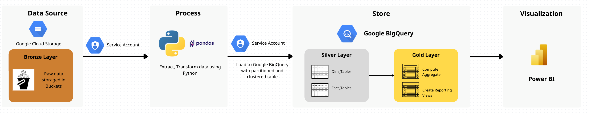

Building an Omnichannel Retail Data Pipeline
I built an ETL pipeline to process 6M+ sales records for a fast-growing technology retail chain. Driven by a custom Python orchestrator, the system cleans raw data and calculates customer segments. The final Data Warehouse provides the analytics team with analysis-ready tables to analyze cashflow and user behavior.

Business Challenge
A fast-growing technology retail chain operates across multiple online and offline channels with various payment gateways. With over 6 million transaction records being generated, a lack of a centralized data pipeline made it difficult to get a holistic view of the business.
- Data Integration: Different sources (online/offline transactions and payment gateways) stored and managed data independently.
- Customer Journey: Tracking users seamlessly across multiple touchpoints and channels was an immense challenge for the analytics team.
- Goal: Build an orchestrated ETL pipeline that integrates all sources into a centralized Data Lake/Warehouse model, ensuring the data is analysis-ready for downstream visualization tools or advanced SQL analytics.
My Approach
Due to project constraints, my primary focus was establishing a solid and scalable data foundation. I designed an Extract, Transform, and Load (ETL) pipeline without the strict necessity of immediate BI front-end connections:
System Architecture
High-level Architecture Design
[Mô tả luồng đi của dữ liệu từ Source qua các công cụ GCP cho đến Dashboard cuối cùng].
[Chèn ảnh Diagram Architecture]
Data Pipeline Implementation
1. Data Ingestion (GCS)
[Mô tả việc thu thập dữ liệu và đẩy lên Cloud Storage (GCS) như thế nào. Dùng Python script hay một tool nào đó?]
2. Data Transformation (BigQuery)
[Mô tả cách thức xử lý dữ liệu thô (raw data) bằng SQL/dbt để tạo ra các bảng phục vụ báo cáo].
3. Advanced Aggregations (RFM & SCD Type 1)
To provide immediate business value, I automated the calculation
of RFM (Recency, Frequency, Monetary) scores. The orchestrator triggers
an advanced SQL MERGE statement in BigQuery that aggregates transaction
history and updates the dim_customer table in place (an SCD Type
1 approach). This automatically groups customers into segments like
'Champions', 'Loyal', or 'At Risk' without needing a separate BI tool to run the
calculations.
Dashboard & Final Output
[Trình bày về sản phẩm cuối cùng: Dashboard Looker Studio/Power BI hoặc một tệp dữ liệu sạch. Nêu ra giá trị của hệ thống mang lại cho người dùng cuối (ví dụ: tự động hóa 100%, update realtime, phân quyền truy cập...)]
[Chèn ảnh chụp Dashboard hoặc Ảnh minh hoạ Data vào đây]
Key Results & Upcoming Improvements
[Đúc kết lại những tác động từ dự án này: Tiết kiệm bao nhiêu thời gian? Nâng cao chất lượng Data ra sao? Và hướng phát triển tiếp theo của Pipeline này là gì?]